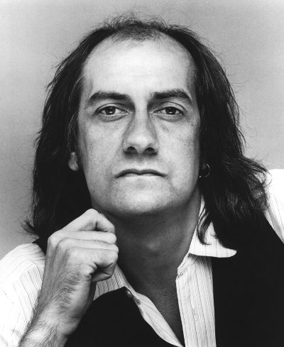
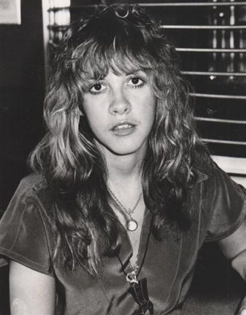
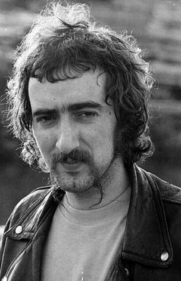
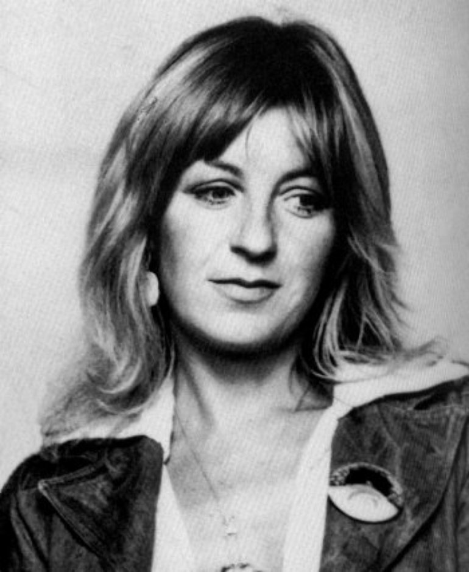
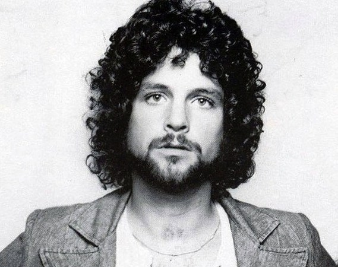
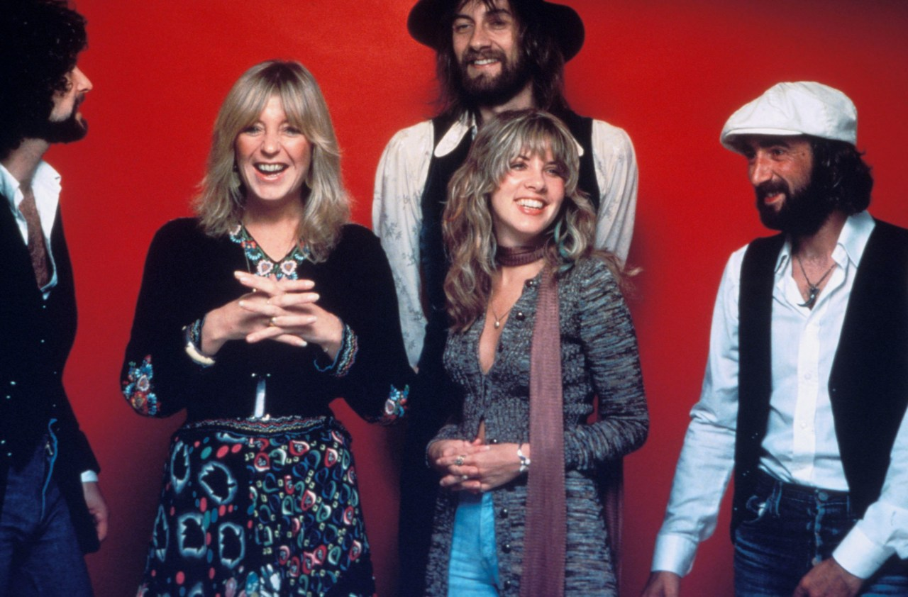
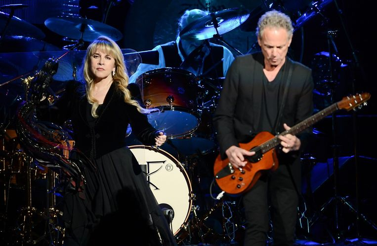
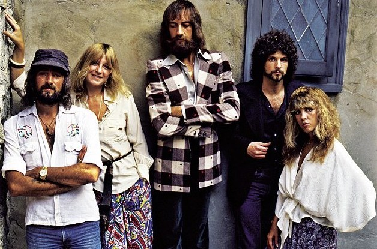

Mick Fleetwood
Michael John Kells Fleetwood (born 24 June 1947) is a British musician and actor,
best known for his role as the drummer and co-founder of the rock band Fleetwood Mac.
Fleetwood, whose surname was merged with that of the group's bassist John "Mac" McVie
to form the name of the band, was inducted into the Rock and Roll Hall of Fame in 1998.
Stevie Nicks
Stephanie Lynn Nicks (born May 26, 1948) is an American singer and songwriter.
Nicks is best known for her work as a songwriter and vocalist with Fleetwood Mac, and for
her chart-topping solo career. She is known for her distinctive voice,
mystical stage persona, and poetic, symbolic lyrics.
John McVie
John Graham McVie (born 26 November 1945) is a British bass guitarist, best known as a
member of the rock bands John Mayall & the Bluesbreakers from 1964 to 1967
and Fleetwood Mac since 1967. His surname, combined with that of Mick Fleetwood,
was the inspiration for the band's name. He joined Fleetwood Mac shortly after
Christine McVie
Christine Anne Perfect (born 12 July 1943), known professionally as Christine McVie
following her marriage to John McVie, is an English singer, songwriter and keyboardist,
known as one of the three lead vocalists and the keyboardist of Fleetwood Mac.
She joined the band in 1970. She has also released three solo albums.
Lindsey Buckingham
Lindsey Adams Buckingham (born October 3, 1949) is an American musician,
singer, songwriter and producer, best known as lead guitarist
and one of the vocalists of the music group Fleetwood Mac from 1975 to 1987 and in
1997 to 2018.


